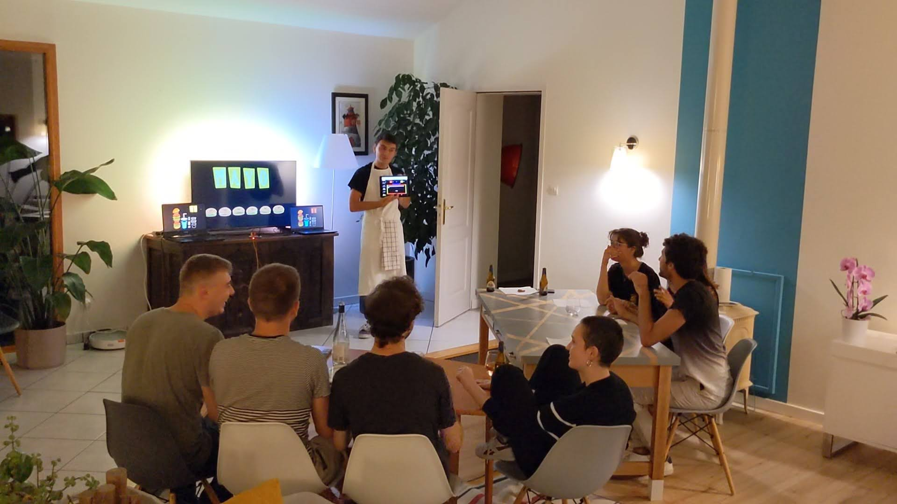

Le projet
L'objectif de ce projet est de recréer entièrement le plateau et la régie du jeu Burger Quiz. L'animateur possède une tablette qui fait office de télécommande et lui permet de contrôler l'ensemble des écrans du plateau : les deux écrans indiquant les miams (le score) des équipes Ketchup et Mayo, ainsi que l'écran principal qui affiche les jingles, les questions, etc.

❓ Comment ça marche ?
L'animateur doit d'abord compléter un fichier Excel pré-rempli pour y inscrire toutes les questions qu'il a préparées. Il suffit ensuite d'exporter ces données au format CSV, de les intégrer dans les fichiers de l'application, et la partie peut commencer !
🍔 Et les cheese-buzzers dans tout ça ?
Chaque joueur est relié à un fil conducteur, lui-même lié à une carte électronique pré-programmée appelée Makey Makey. Grâce à cette astuce, les joueurs deviennent eux-mêmes les buzzers : il faut alors frapper un de ses voisins de table pour fermer le circuit électronique de son équipe et déclencher le buzzer sur l'écran principal.
🎬 Un exemple d'émission ?
Le tournage de notre propre émission exemple est en cours... Revenez plus tard pour voir le résultat ici !